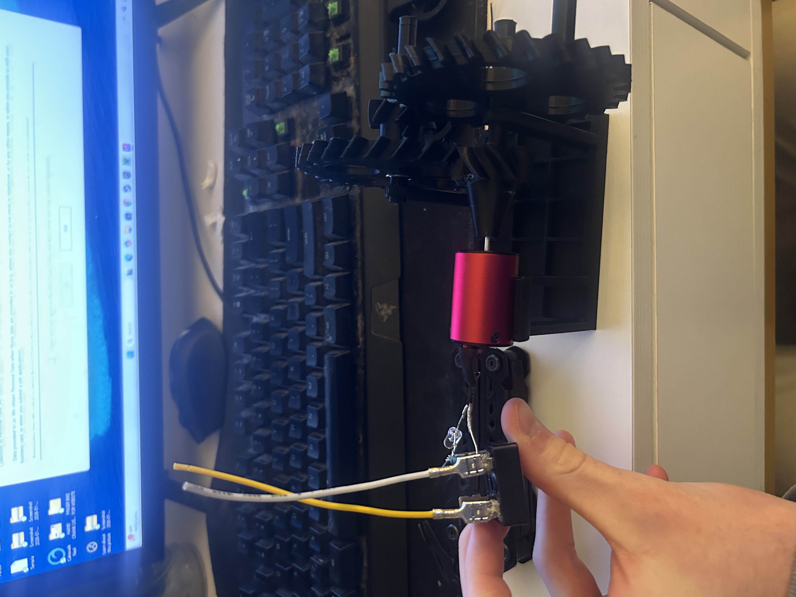

I am a detail-oriented mechanical engineering student passionate about robotics and electromechanical systems. I enjoy designing and building mechanical assemblies, analyzing failures, and iterating with close attention to tolerances, alignment, and system behavior. My work is driven by turning precise design decisions into reliable, functional hardware.
Projects
Motion-Detecting Turret
Overview
Two-axis pan/tilt system that tracks hand position using a camera and Arduino-controlled servos via Python code. Hand coordinates are mapped to angular commands to drive real-time motion.
Engineering / Design
Pan/tilt mount and brackets were designed in CAD and 3D printed with focus on stiffness, alignment, and servo mounting geometry. Control logic converts image-space coordinates to servo angles with mechanical limits to prevent overtravel and chatter.
Results & Iteration
System successfully tracks hand motion across the camera field of view with responsive pan and tilt behavior. Remaining issues include detection noise and high-frequency jitter, motivating future filtering and calibration improvements.
Media
CNC Gripper
Overview
Mechanically designed end-effector intended for CNC or robotic applications, emphasizing modular mounting, MATLAB motion code, and reliable assembly. Components were designed for practical fabrication and repeatable fit.
Design Considerations
CAD focused on part tolerances, fastener access, and load paths to ensure structural integrity in printed components. Geometry was iterated to account for print shrinkage, alignment, and assembly order.
Outcome
The assembly was successfully modeled and prototyped with verified part fit and functional alignment. Design iterations improved manufacturability and highlighted the impact of tolerance selection in 3D-printed mechanisms.
Media
Hand Crank Light (Unsuccessful Build)
Goal
Use a hand-cranked BLDC motor as a generator and a 3-phase bridge rectifier to power a single LED.
What Was Tried
The BLDC’s three phases were connected to a 3-phase bridge to produce DC output, then routed to a single LED with current limiting. Multiple wiring and connection checks were performed to confirm phase continuity and polarity.
Why It Didn’t Work
Hand-crank RPM produced insufficient rectified DC under load; the LED’s forward voltage threshold was not consistently reached. Bridge diode drops and wiring losses further reduced available voltage/current.
Next Steps
Measure rectified DC vs RPM (open-circuit and under LED load) to quantify available power. Reduce voltage loss (Schottky bridge if possible) and add a capacitor and/or boost converter based on measured current.
Media

CAD Designs & Concepts
Overview
Collection of smaller CAD projects exploring mechanism design, packaging,
and gear-driven motion.
Gallery
Hand Crank Wrench — manual mechanism concept focused on torque transfer and ergonomic form.
RC Car Design — drivetrain and chassis layout study with emphasis on packaging.
“5 Billion Year” Gearbox — multi-stage gear train concept designed for extreme reduction ratios.
Finger Bike — compact mechanical assembly emphasizing part fit and joint motion.
Gear Playground — exploratory CAD models investigating gear meshes and motion transfer including Worm, Herringbone, Rack, Bevel, and Spur Gears.